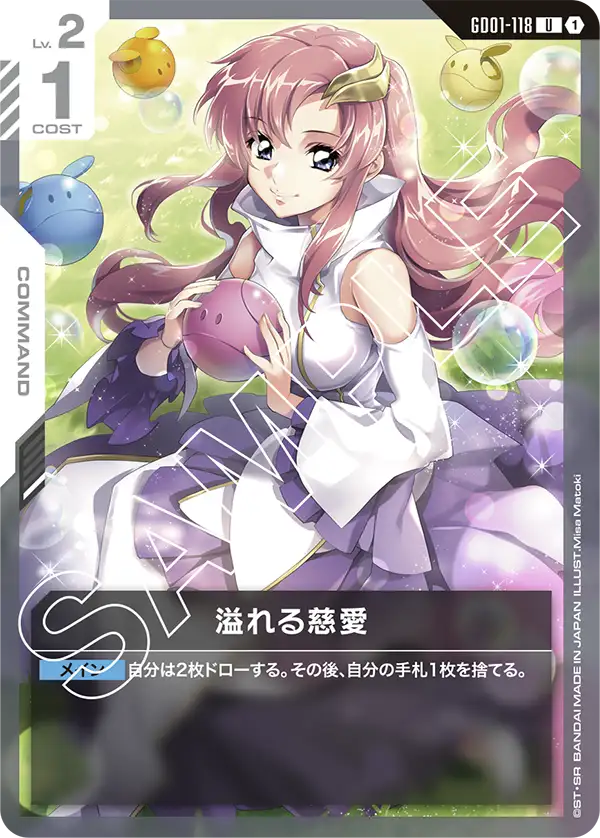
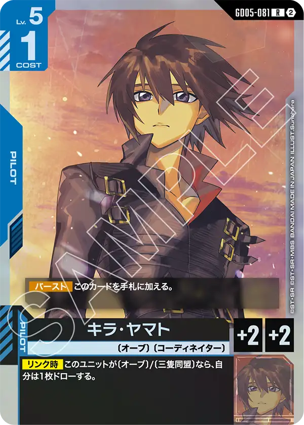
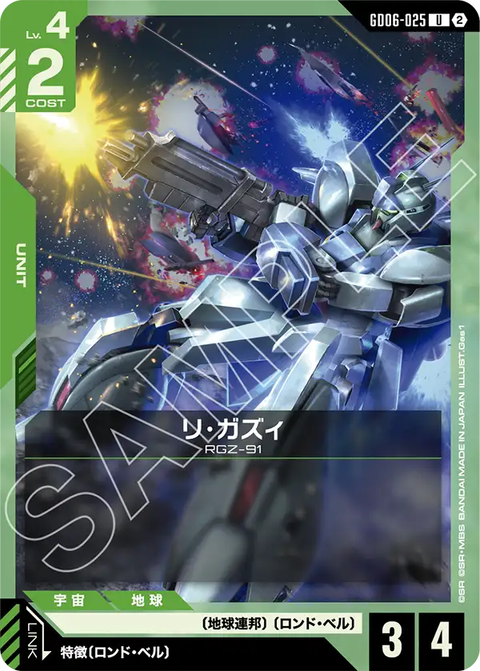
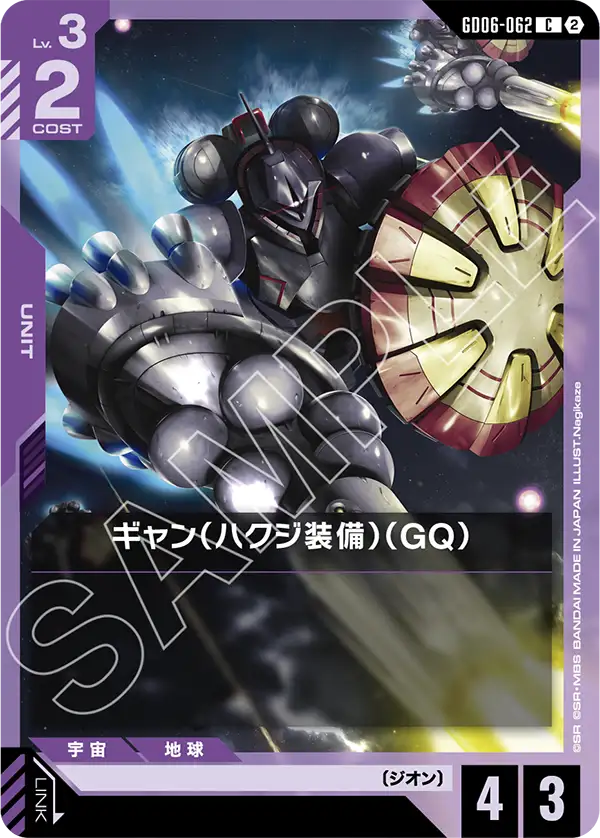
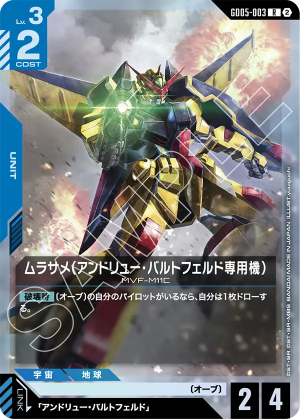
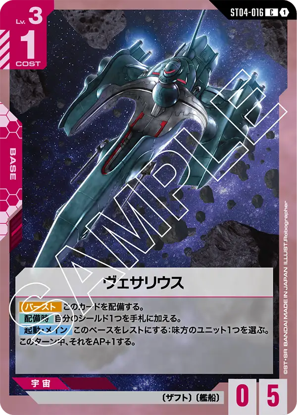
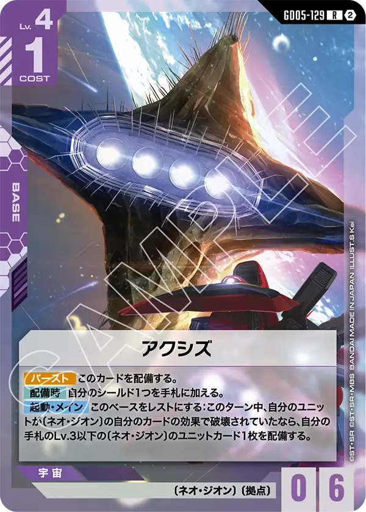

11/9〜11/15に開催された55大会の入賞512デッキを、前週（11/2〜11/8・77大会・728デッキ）と比べた。対象はNTC MISSION5 11月。入賞デッキは大会結果に順位が載ったデッキすべてで、上位4位だけを使う相性表とは母数が違う。
デッキカラー別の入賞割合
| デッキカラー | 前週 | 今週 | 差 |
|---|---|---|---|
| ↗ 赤/白 | 29.5% (215) | 31.8% (163) | +2.3pt |
| ↑ 青/白 | 11.5% (84) | 18.0% (92) | +6.4pt |
| → 青/緑 | 17.2% (125) | 17.6% (90) | +0.4pt |
| ↓ 緑/紫 | 20.2% (147) | 14.3% (73) | −5.9pt |
| ↗ 青/赤 | 7.0% (51) | 9.8% (50) | +2.8pt |
| → 赤/紫 | 4.1% (30) | 3.1% (16) | −1.0pt |
| ↓ 青/紫 | 6.9% (50) | 2.7% (14) | −4.1pt |
| → 緑/白 | 2.5% (18) | 1.8% (9) | −0.7pt |
| → その他（2種） | 1.1% (8) | 1.0% (5) | −0.1pt |
矢印は前週からの割合の差で、↑ +4pt以上、↗ +1.5pt以上+4pt未満、→ −1.5pt超+1.5pt未満、↘ −4pt超−1.5pt以下、↓ −4pt以下。
デッキカラーごとの採用カード
採用率は、そのデッキカラーの入賞デッキのうちそのカードを1枚以上入れた割合。急上昇は、両方の週で30デッキ以上あるデッキカラーで、採用率が10pt以上上がったカードのうちいちばん上がった1枚。
赤/白 ↗（163デッキ）



ガンダムファイト[GD05-128]が急上昇カードとして登場。
5弾初期でチラチラ採用されていたこのカードが改めて評価対象に入り試されているのだと思う。
おそらく後述するアルトロンガンダム（EW版）[GD06-064]やキャノン・イルフート[GD06-077]などを中心に白が入るデッキにブロッカーがより多く採用され始めたことから採用され始めたのだろう。
MFデッキではサイクロンパンチ[GD05-121]を利用し序盤APを下げることを得意として組み立てを行っているが、それだけでは一部の低AP、高HPユニットに対して破壊しきれない場合を考慮して採用されてきているのだろう。
5弾では青緑νガンダムデッキの対策としてHP5のガンダムファイト[GD05-128]は結果的に構築から抜ける形となっていったが、今回はどのようになるのか見ていきたい。
今回は赤白としてまとめて紹介をしているが、ガンダム・エアリアル[ST13-006]やΖΖガンダム[GD06-033]が採用されているデッキも集計に含まれているので詳細は各自確認をしてもらいたい。
青/白 ↑（92デッキ）


急上昇カードはアルトロンガンダム（EW版）[GD06-064]。青白の一部で試されており、白が入るカードには積極的に採用されていたアルトロンガンダム（EW版）[GD06-064]が青白にも採用数が増えた形になる。
序盤はブロッカーとして使えつつ、中盤からは高APユニットとして利用ができるためやはり強いと言う評価なのだろう。
青白は〔オーブ〕を中心としたデッキもあるためこちらも詳細は各自確認をお願いしたい。
青/緑 →（90デッキ）



リ・ガズィ[GD06-025]が急上昇カードとなっているが、これはGD06で〔ロンド・ベル〕の唯一の強化カードとなっているためこのカードの採用状態を確認されているのだろう。
他にも採用が検討されるカードがあればよかったのだが、強化幅が非常に狭いため研究の楽しみはこのデッキでは少なく感じるだろう。
デッキパワーは高く、赤白でガンダムファイト[GD05-128]が採用されており、今後HP5ベースの採用が増えていく可能性はあるので立ち位置はまた変わっていくだろう。
緑/紫 ↓（73デッキ）


いわゆるリゼル[GD01-018]スタッツと言われるギャン（ハクジ装備）（GQ）[GD06-062]が急上昇カードになった。
他のデッキでもレベル3コスト2、AP4のHP3カードは多く採用されており、緑紫にも同じように採用される形になった
ギャン（ハクジ装備）（GQ）[GD06-062]は〔ジオン〕を持つためザクⅡ（シャア・アズナブル機）[ST03-006]の効果範囲に入っており手札に加える選択肢が増えるので十分採用の選択肢に入ったのだろう
青/赤 ↗（50デッキ）


新しいデッキタイプとして〔オーブ〕を中心に採用を行った赤青の入賞数が増えた。
ヴェサリウス[ST04-016]は新しいデッキの登場を物語っているだろう。
今までの赤青は序中盤にコマンドカード利用して戦っているデッキが多かったが、〔オーブ〕のユニットを使う形に変化している
決して選択肢が多いわけでは無いが、パイロットが非常に優秀なため〔オーブ〕がいる赤青と言うデッキとして成立したのだろう。
以前までの赤青とは毛色が異なっているので新弾の再注目デッキと言えよう
中盤までのユニットに少しAP不足があるのかヴェサリウス[ST04-016]の採用が急上昇しているが、今後の研究によってまた変わっていく可能性はあるだろう
赤/紫 →（16デッキ）


青/紫 ↓（14デッキ）


緑/白 →（9デッキ）
運営のひとこと
赤紫、青紫、白緑は急上昇カードが無いため割愛する。
GD06は環境を大きく変えるような研究対象が少ないのかもうすでにある程度固まりつつあるのではないのかと見える。
また、各デッキの対策内容が定まってきたら研究範囲が広がっていくと思われるので様々なカードの採用を検討していってもらいたいと思う。
巷では〔アルファ殺し〕を採用した青紫が勝率を上げていると聞いているのでいつか紹介できればと考えている。
もっと詳しく見る
大会ごとの結果やデッキタイプの割合は、NTC MISSION5 11月の環境分析で見られる。
数え方
週は月曜から日曜で区切る。デッキリストが公開されていない入賞デッキは数に入れていない（今週0件・前週0件）。
※数字は当サイトが公式の大会結果から自動で集めたデータの集計。誤りに気づいたらXアカウント（@gcg_stats）のDMへ。